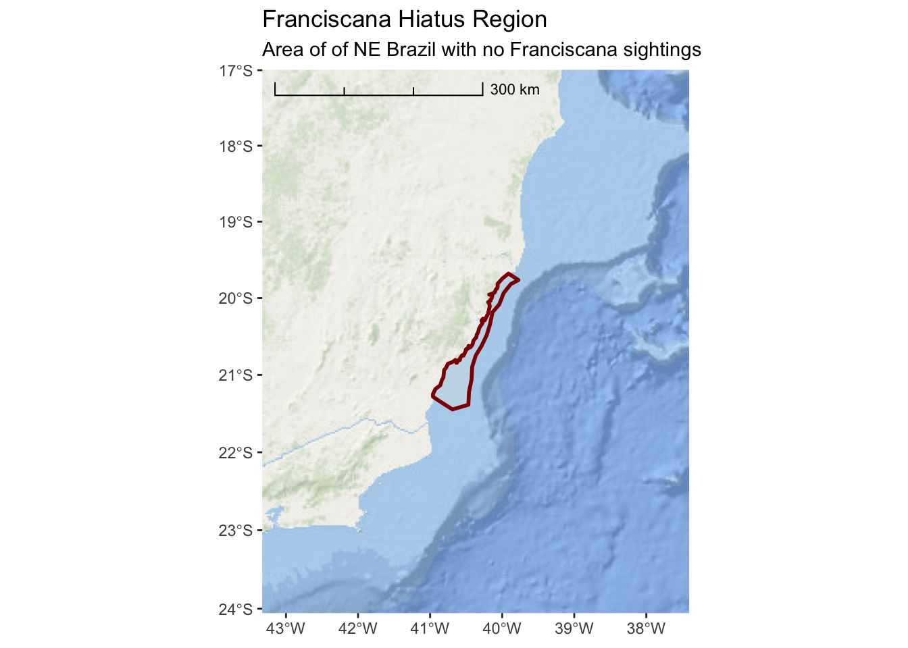
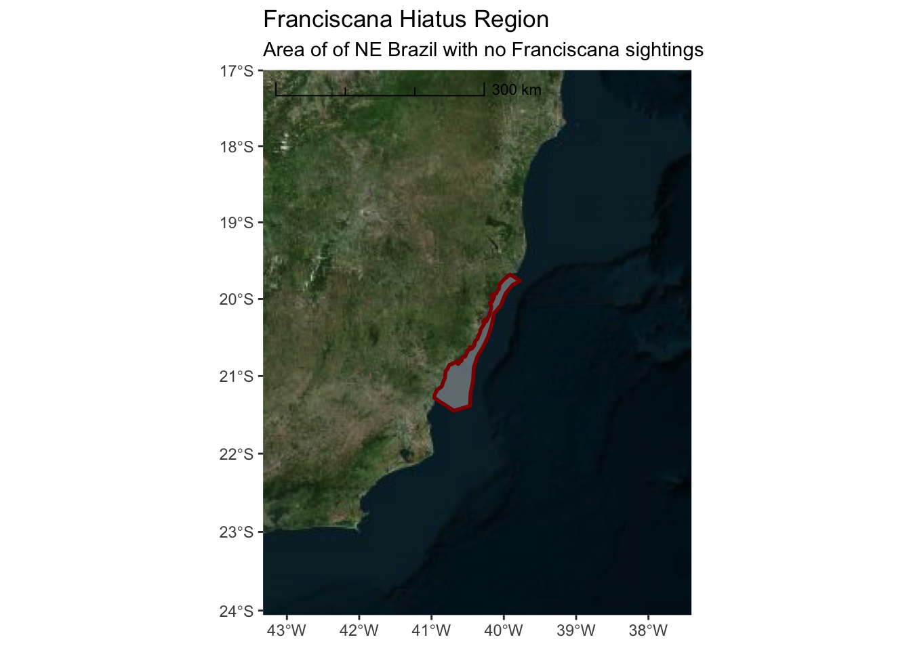

Section 3 Exercise #1: Loading Spatial Data
3.1 Load Shapefiles Into R
The sf package has wide-ranging support for importing vairous spatial
data/file formats. You can even import data directly from a spatially
enabled database (e.g. PostgreSQL/PostGIS). One of the more common spatial
file formats you may encounter is the ESRI Shapefile format.
Here, we will work with an example from a research effort surveying for Franciscana. Prior to the survey effort, there was a region identified as a hiatus, or gap, where there were no historical sightings of Franciscana. This region was defined and is provided as a Shapefile.
## ── Attaching packages ────────────────────────────────────────────────────────────────────────────────── tidyverse 1.2.1 ──## ✔ ggplot2 3.0.0 ✔ purrr 0.2.5
## ✔ tibble 1.4.2 ✔ dplyr 0.7.7
## ✔ tidyr 0.8.1 ✔ stringr 1.3.1
## ✔ readr 1.1.1 ✔ forcats 0.3.0## ── Conflicts ───────────────────────────────────────────────────────────────────────────────────── tidyverse_conflicts() ──
## ✖ dplyr::filter() masks stats::filter()
## ✖ dplyr::lag() masks stats::lag()## Linking to GEOS 3.6.2, GDAL 2.3.0, PROJ 5.1.0## Linking to liblwgeom 2.4.4 r16526, GEOS 3.6.2, proj.4 5.1.0hiatus_path <- file.path("..","data","Fraciscana_Example","Hiatus.shp")
hiatus <- sf::st_read(hiatus_path)## Reading layer `Hiatus' from data source `/Users/josh.london/_projects/r/solamac-spatial-mapping/data/Fraciscana_Example/Hiatus.shp' using driver `ESRI Shapefile'## Warning in CPL_read_ogr(dsn, layer, query, as.character(options), quiet, :
## GDAL Message 1: organizePolygons() received an unexpected geometry. Either
## a polygon with interior rings, or a polygon with less than 4 points, or a
## non-Polygon geometry. Return arguments as a collection.## Simple feature collection with 1 feature and 1 field
## geometry type: POLYGON
## dimension: XY
## bbox: xmin: -40.95967 ymin: -21.44691 xmax: -39.77479 ymax: -19.68095
## epsg (SRID): 4326
## proj4string: +proj=longlat +datum=WGS84 +no_defsThis demonstrates a common issue with Shapefiles. Sometimes they can be improperly
formed or corrupted. The lwgeom package has a function st_make_valid() which
can fix most of these issues. There is one additional step required
(sf::st_collection_extrac()) which simplifies the data object from a
“GEOMETRYCOLLECTION” to a single “POLYGON”. Don’t get too hung up on these steps
to ‘fix’ the Shapefile data. Unfortunately, it is just one of those things that
you might have to wrestle with when importing data.
Note that we are using the pipe (%>%) function in the code below. This is a
key component of the tidyverse and may be new to users more familiar with
standard R code.
library(lwgeom)
hiatus <- hiatus %>% lwgeom::st_make_valid() %>%
sf::st_collection_extract()
# base R version
# hiatus <- lwgeom::st_make_valid(hiatus)Now, let’s just do a quick plot of hiatus so we can verify it looks valid

3.2 First Map with ggplot
While this demonstrates that we have successfully imported the spatial data into
R, it is not a very satisfying map. We will use the ggplot2 package as the
basis for all of our mapping. If you are not already familiar with ggplot2, it
is a widely used framework for creating all types of plots and graphics from
within R. ggplot2 has special extensions and capabilities with respect to
simple features (sf) data that simplifies creation of publication quality
maps.
First, lets repeat our previous plot but this time with ggplot2

This is a nicer looking plot and, note, ggplot2 has kindly added graticule
ticks for the longitude and latitude values. It would be nice, however, if we
had some land and ocean features so we can better appreciate this hiatus region.
For this, we can use the ggspatial package to import map tiles hosted exernally
via the internet. In this first example, we will pull map tiles from the Open
Street Map service.
## Zoom: 7
This is an improvement, but it might be better if we added some transparency to the hiatus polygon so we can see the land features underneath. We can also change the color and weight of the line so it stands out more.
ggplot() +
annotation_map_tile(type = "osm") +
layer_spatial(hiatus, col = "dark red", alpha = 0.4, size = 2)## Zoom: 7
Now we have a slightly better sense of where we are in relation to the nearby
land. But, it might be useful to zoom out a bit more so we can get a better
sense of the areas location and nearby geograph. Note the arguments to
expand within scale_x_continuous and scale_y_continuous are in units
of degrees longitude and latitude.
While we are at it, we can also add a scale bar in the bottomr right.
ggplot() +
annotation_map_tile(type = "osm") +
layer_spatial(hiatus, col = "dark red", alpha = 0.4, size = 1) +
scale_y_continuous(expand = c(1.5,1.5)) +
scale_x_continuous(expand = c(2,2)) +
annotation_scale(location = "br", width_hint = 0.5, style = "ticks")## Zoom: 6The Open Street Map project is not really designed for environmental or marine centric maps. A better option might be the ESRI World Ocean Basemap which provides detailed bathymetry and topography for the entire globe.
We need to specify the URL location for the tile service:
esri_ocean <- paste0('https://services.arcgisonline.com/arcgis/rest/services/',
'Ocean/World_Ocean_Base/MapServer/tile/${z}/${y}/${x}.jpeg')And, then we can replace the annotation_map_tile() in the previous code
ggplot() +
annotation_map_tile(type = esri_ocean, zoomin = 1, progress = "none") +
layer_spatial(hiatus, col = "dark red", alpha = 0.4, size = 1) +
scale_y_continuous(expand = c(1.5,1.5)) +
scale_x_continuous(expand = c(2,2)) +
annotation_scale(location = "br", width_hint = 0.5, style = "ticks")
Now that we no longer have place names, it is important to add a title and subtitle to the map so we can inform the user about what this is and where it is in the world.
ggplot() +
annotation_map_tile(type = esri_ocean, zoomin = 1, progress = "none") +
layer_spatial(hiatus, col = "dark red", alpha = 0.4, size = 1) +
scale_y_continuous(expand = c(1.5,1.5)) +
scale_x_continuous(expand = c(2,2)) +
annotation_scale(location = "tl",
width_hint = 0.5,
style = "ticks") +
ggtitle("Franciscana Hiatus Region",
subtitle = "Area of limited Franciscana sightings off NE Brazil")
There are variety of other style options available for tile maps that you can explore. Here are some additional tiles that you might prefer
3.2.1 cartolight
ggplot() +
annotation_map_tile(type = "cartolight", zoomin = 1, progress = "none") +
layer_spatial(hiatus, col = "dark red", alpha = 0.4, size = 1) +
scale_y_continuous(expand = c(1.5,1.5)) +
scale_x_continuous(expand = c(2,2)) +
annotation_scale(location = "tl",
width_hint = 0.5,
style = "ticks") +
ggtitle("Franciscana Hiatus Region",
subtitle = "Area of limited Franciscana sightings off NE Brazil")
3.2.2 Microsoft Bing Aerial Imagery
ggplot() +
annotation_map_tile(type = "http://ecn.t3.tiles.virtualearth.net/tiles/a${q}.jpeg?g=1", zoomin = 1, progress = "none") +
layer_spatial(hiatus, col = "dark red", alpha = 0.4, size = 1) +
scale_y_continuous(expand = c(1.5,1.5)) +
scale_x_continuous(expand = c(2,2)) +
annotation_scale(location = "tl",
width_hint = 0.5,
style = "ticks") +
ggtitle("Franciscana Hiatus Region",
subtitle = "Area of limited Franciscana sightings off NE Brazil")